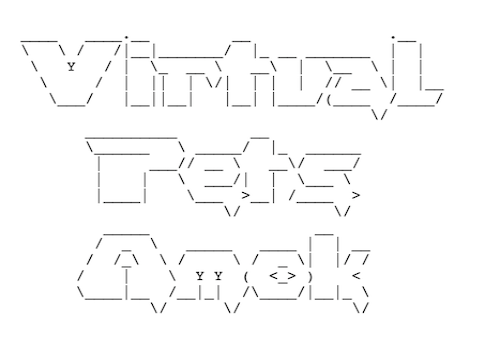

Virtyal Pets Amok
A console game where a virtual pet shelter has gone amok and needs a kind dedicated volunteer to help
bring it back to order. The virtual and robotic pets need feeding, watering, playing, walking, and
oiling. This project is coded in Java with TDD and demonstrates the fundamental concepts of OOP
described by the acronym APIE.

World Trekking
A group project for a Spring JPA application that provides a list of worldwide treks offered per
continent and region,
along with difficulty level. Skills demonstrated in this application include Spring Boot, Spring
JPA, OOP as described by the acronym APIE, MVC Design, HTML and CSS.

Mystery Educator
A single page application for an organization that specializes in offering niche adventures for
children aged 6 - 13 to learn about science and art. The application pulls data from the publicly
available NASA and Metropolitan Museum of Art APIs. Skills demonstrated in this application include
working with APIs, Javascript, Java, HTML and CSS.